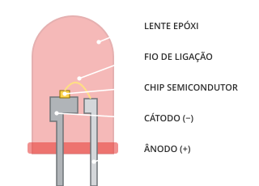
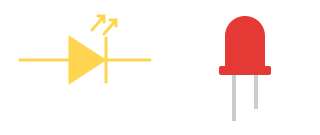
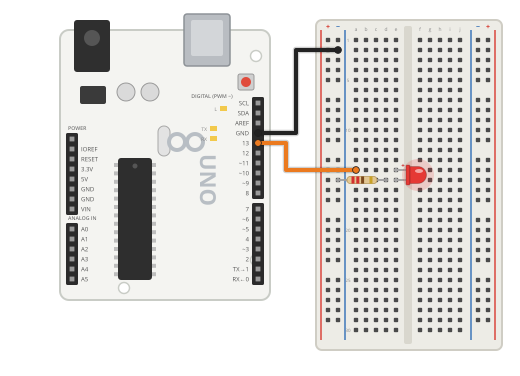

O que é um LED?
LED é a sigla de Light Emitting Diode, ou Diodo Emissor de Luz: um componente que transforma energia elétrica em luz. Por ser um diodo, ele é polarizado — a corrente só passa do ânodo (+) para o cátodo (−). Ligado ao contrário, não acende. Gasta pouca energia, dura muito e aparece em semáforos, painéis, telas e lanternas.

Estrutura interna de um LED de 5 mm.
Como funciona
Dentro do LED há um pequeno chip semicondutor formado por duas regiões (P e N). Quando a corrente passa do ânodo para o cátodo, elétrons e lacunas se recombinam nessa junção e liberam energia na forma de luz.
A cor depende do material do semicondutor, e não da cor da cápsula. LEDs vermelhos precisam de cerca de 2 V para acender; azuis e brancos, de cerca de 3 V.
Como todo diodo, o LED só conduz num sentido. Ligado ao contrário, ele simplesmente não acende. Ligado sem resistor, a corrente sobe muito e ele queima.

Tipos
5 mm e 3 mm
Os modelos “de encaixe” mais comuns em kits e protótipos.
Alto brilho
Cápsula transparente e luz bem mais forte, usados em lanternas e sinalização.
SMD
Minúsculos, usados em telas, lâmpadas e no próprio Arduino (LED “L”).
Infravermelho
Emite luz invisível; é o que existe no controle remoto da TV.
Ficha técnica
- Tensão direta: ≈ 2 V (vermelho, amarelo, verde) · ≈ 3 V (azul, branco)
- Corrente típica: 10 a 20 mA
- Resistor recomendado com 5 V: 220 Ω a 330 Ω
- Perna longa = ânodo (+) · perna curta = cátodo (−)
- Lado reto (chanfro) da cápsula = cátodo
Montagem dos componentes

LED no pino 13 com resistor de 220 Ω até o GND.
Você vai precisar de
- 1× Arduino Uno R3 + cabo USB
- 1× Protoboard
- 1× LED 5 mm
- 1× Resistor de 220 Ω
- 2× Jumpers macho-macho
Ligações
| Pino 13 | Perna longa (+) do LED |
|---|---|
| Perna curta (−) do LED | Resistor de 220 Ω → trilha (−) |
| GND | Trilha (−) |
#< código exemplo >
O LED pisca “SOS” em código Morse: três sinais curtos, três longos e três curtos. Repare na função sinal(), criada para não repetir o mesmo trecho de código.
/*
Oficina de Robótica SELFÍS — Componente: LED
Exemplo: o LED transmite "SOS" em código Morse ( . . . - - - . . . )
Ligações: pino 13 -> perna longa do LED | perna curta -> resistor 220 ohms -> GND
*/
const int PINO_LED = 13;
const int PONTO = 200; // duração de um ponto, em ms
const int TRACO = 600; // um traço vale 3 pontos
void setup() {
pinMode(PINO_LED, OUTPUT);
}
// Acende o LED por um tempo e depois faz uma pausa curta
void sinal(int duracao) {
digitalWrite(PINO_LED, HIGH);
delay(duracao);
digitalWrite(PINO_LED, LOW);
delay(PONTO);
}
void loop() {
for (int i = 0; i < 3; i++) sinal(PONTO); // S = . . .
delay(TRACO);
for (int i = 0; i < 3; i++) sinal(TRACO); // O = - - -
delay(TRACO);
for (int i = 0; i < 3; i++) sinal(PONTO); // S = . . .
delay(2000); // pausa antes de repetir
}
💡 Teste primeiro no Tinkercad (Circuitos → Código → Texto → cole o código → Iniciar simulação). Depois carregue na placa real pela Arduino IDE.